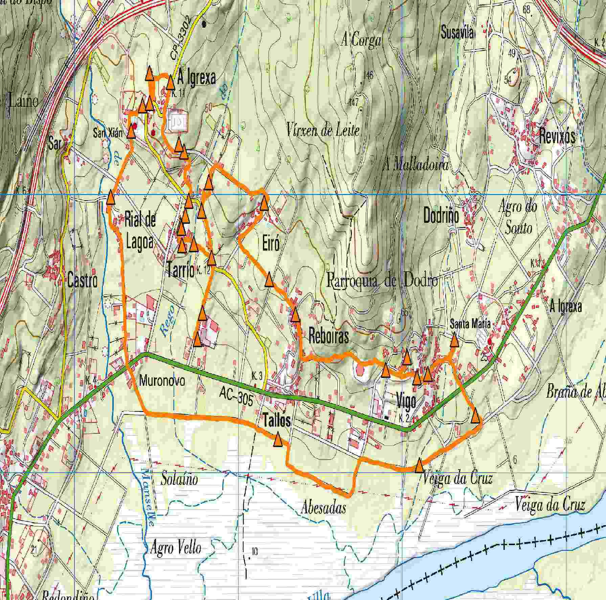
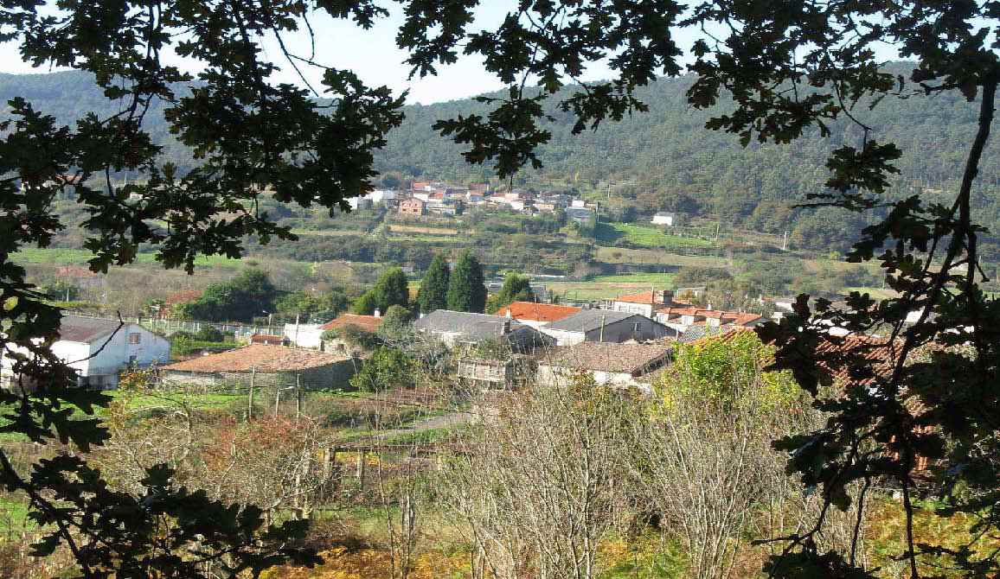
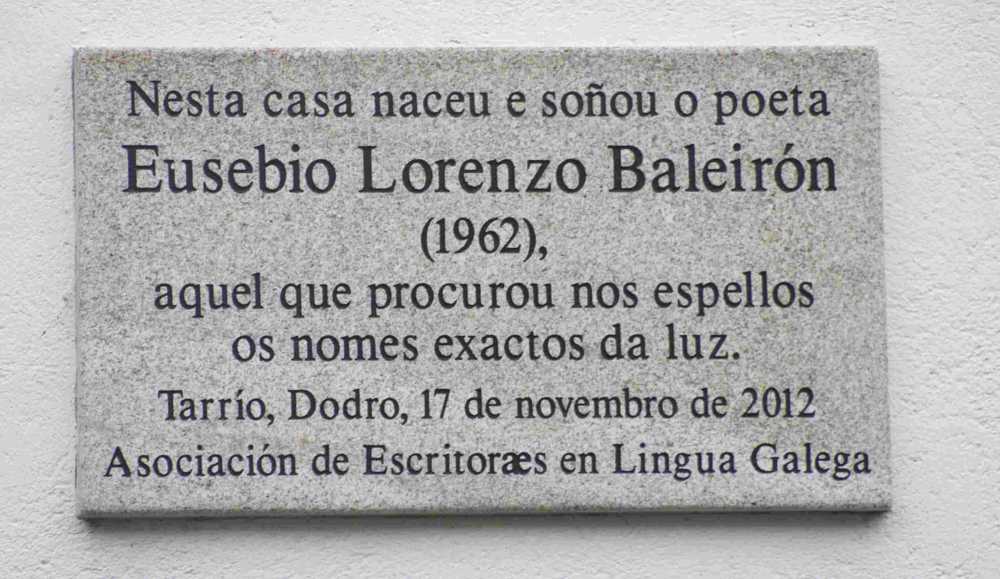
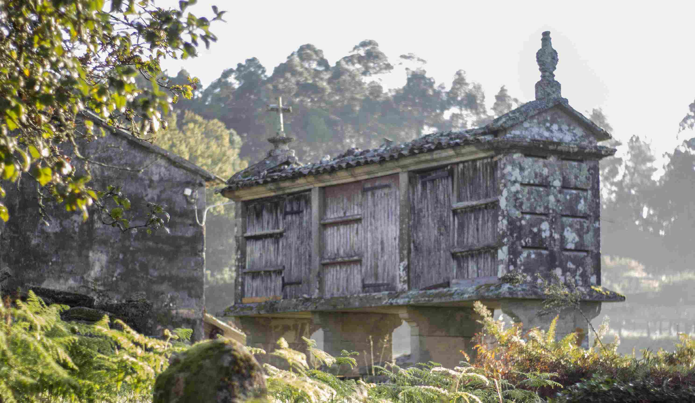
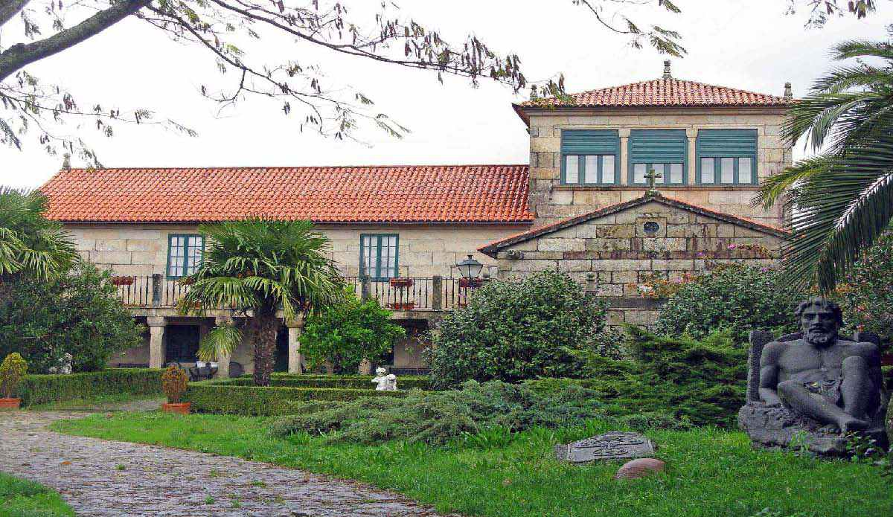
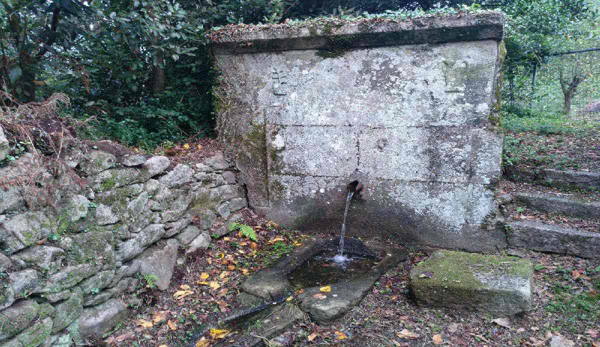
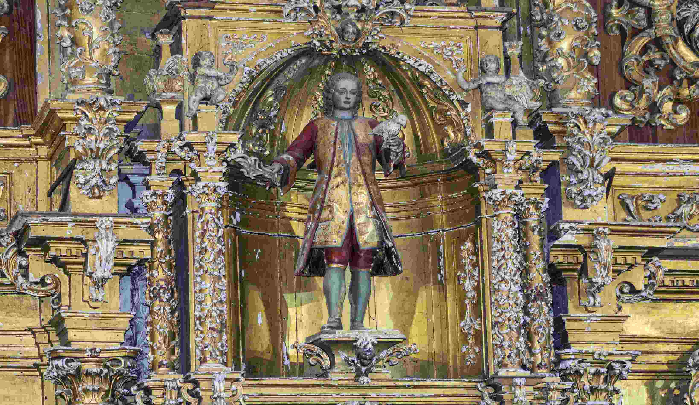
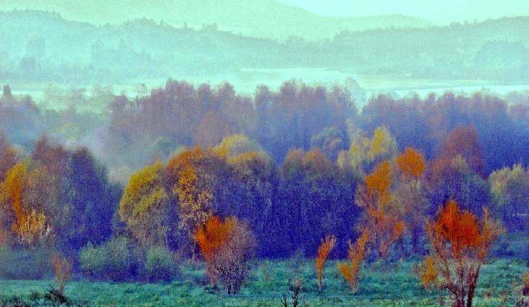
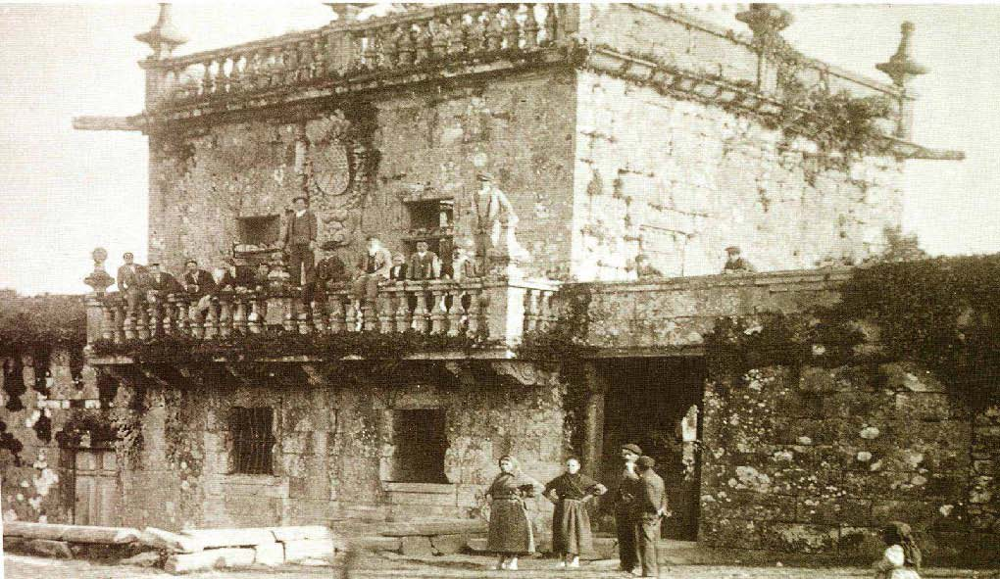

Ruta que percorre os lugares nos que viviu o poeta Eusebio Lorenzo Baleirón (1962-1986). En vida deixou publicados os poemarios “ Os días olvidados ” e “ O Corpo e as sombras ” e o “ Libro das viaxes e dos soños ”. Postumamente viu a luz “ A morte presentida ”, o derradeiro conxunto de poemas. No ano 2016 foi proposto para o Día das Letras Galegas.
| Inicio | CPI Eusebio Lorenzo Baleirón |
| Fin | CPI Eusebio Lorenzo Baleirón |
| Distancia | 9,52Km |
| Tipo | Circular |
| Duración | 3h |
| Dificultade | Baixa |

CPI Eusebio Lorenzo Baleirón
“Había aquí leiras de millo ás que íamos sachar polos veráns e un bosque de abeleiras. Aínda quedan algunhas. Tamén houbo no lugar durante a Idade Media un pazo que foi dos Soutomaior, descendentes de Paio Gómez Chariño, señor destas terras que pertenceron a Rianxo ata o século XIX. Chámase aínda hoxe O Pazo e se remexemos nos arrós atopamos as tellas da edificación.” “ No salón de actos do centro entrégase o “ Premio de Poesía Eusebio Lorenzo Baleirón”.”


Aldea de Eusebio , Tarrio
“ Tarrío é unha das aldeas de San Xián de Laíño, no sopé dun altorelo suave, mirando cara as brañas da cor do limón. As casas arremuíñanse arredor das eiras e apéganse ós muros altos do pazo que foi dos Ballesteros. A Banda e o Rueiro, do lado de riba da estrada, son barrios da aldea. ” “A aldea de Tarrío de lonxe parece vila, se non foran os outeiros que ten do lado de riba” é cantiga dos vellos en Tarrío.

Casa de Eusebio
“ A Asociación de Escritores en Lingua Galega colocou unha placa na fachada como homenaxe ao poeta. A aldea aparece nos seus versos “Mal coñecín a sombra dos meus pasos,/ lugares nun relanzo onde medrar a hedra/ abeirado da chuva do tarrío con néboa”. Velaquí os lugares familiares nos que se criou Eusebio, a Eira e a Eira do Hórreo, o lavadoiro, o medeiro de Gradín, a Fonte e a outra Fonte de Vera, os camiños e as corredoiras da aldea. ” “ Aquí naceu Eusebio o 25 de xaneiro de 1962. Morreu nesta casa o 14 de decembro de 1986. ”
Eira do hórreo
“ No medio de Tarrío, localízase a Eira do Hórreo, que ten dúas destas construcións, un deles derruído. No Libro das Viaxes e dos Soños os canteiros de Pontedouro, herdeiros dunha raza de navegantes, levantaron os hórreos. ” “ Usábanse para gardar as inmensas colleitas e por tal foron admirados ”.

Pazo de Tarrío
“A principios do século XVIII a herdeira do pazo casou con Cachamuíña, o heroe da Guerra da Independencia en Galicia. O escudo dos Ballesteros figura na parede norte con dúas bestas cruzadas, vieiras e estrelas en cruz. Na actualidade é propiedade de Juan Ramón Quintás, prestixioso economista que participou na elaboración do Estatuto de Galicia. Ten planta angular e unha gran torre. Enriba dunha fermosa fonte cunha pérgola hai unha imaxe do Santo Antón, o santo casamenteiro ao que as mozas lle ataban as mans cunha fita. Están tamén os pazos en varios lugares da obra de Eusebio, os de Pedrayo, os nosos. Eusebio viviu aquí aos pés dos muros do Pazo de Tarrío Bastón.” “Fundárono en 1567 Antonio Ballesteros, rexedor da cidade de Santiago, e a súa dona.”
Escola de Chenlo
“Nunha das dependencias gardábase un vello Chevrolet do que aínda quedan os ferros oxidados. No xardín había unha gran gaiola de madeira para os paxaros e medraban buxos, mandarinas, milgrandeiras e camelias. Facíamos xabón fregando as flores nas mans. Quizais o texto de Eusebio se refira a elas e a este camiño da escola: “O recendo da camelia mollada enchía de luz o camiño”. “Ata a escola de Chenlo, onde estudou, subíase pola Banda, un camiño que pasa á beira da casa dun indiano, o Brañeiro, cunha fermosa fonte ao fondo dunha escaleira de pedra que ten inscrita a data de 1910. ”
Muíño do vento de Chenlo
“Non era de abanos fixos coma os que se restauraron nos concellos veciños de Valga e de Catoira, senón que levaría unha cuberta móbil cónica, cun entramado xiratorio de madeira, movido por unha xugada de bois, que permitiría carear as aspas tendo en conta a dirección do vento.” “O movemento transmitíase a un eixe e a unha ou dúas pedras de moer. ”
Fonte da Dea da igrexa
“A Fonte da Dea da Igrexa, ten nos laterais cadanseu motivo decorativo vexetal de trazos esquemáticos. Minimalismo dos nosos canteiros.”.
Cemiterio e igrexa San Xián de Laíño
“Con motivo da celebración do certame de poesía que leva o seu nome vénselle facer cada ano no mes de decembro unha ofrenda floral. A igrexa é de mediados do XVIII, de estilo barroco cun fermoso retablo dedicado a San Xián.” Aquí foi enterrado Eusebio. Na lápida pódense ler uns versos seus: “En ti comparto os días e os silencios,/as mañáns transparentes, as futuras”.
Cruz de Rial de Lagoa
“O Rego de Manselle, que pasa por Rial de Lagoa, está cheo de vellos muíños: O do Can, o de Rial, o do Batán, o de Chacón... A cruz da fonte da aldea pertence ao Cruceiro do Bazoco, da corredoira de Castro, derrubado por un ciclón a principios do século pasado. Se a data, como parece, fose a de 1603, sería o máis antigo do concello.”
Brañas de Laíño
“Ameneiros, vimbieiras, regos, espadanas, canavais polos que cruza a sombra da auga… son nomes que podemos atopar nos seus poemas, referidos sen dúbida a este espazo das Brañas de Laíño, que nos identifica. Nelas viven as derradeiras parellas dunha subespecie da Escribenta das canaveiras así como outras aves en perigo de extinción coma a Folosa Acuática ou o Picanzo Vermello. Durante séculos as Brañas foron exemplo de aproveitamento dun espazo comunal por parte das nosas xentes, antes de seren arrebatados pola Lei de Costas. Eran famosos no século XIX pola súa carne os bois cebóns de Laíño, e xa no século XX, as vacas alimentadas coa herba destas campías permitiron a creación das cooperativas leiteiras anteriores á Guerra Civil. Unha delas aparece maxistralmente retratada na Pensa Nao de Anxo Angueira. Eusebio ten ido pescar ao río grande, o Ulla, e tense bañado nos esteiros.” Están nos versos de Rosalía e tamén nos escritos de Anxo Angueira e de Eusebio: “Cando outono pasaba de camiño das brañas”.

Río de San Lufo
“Levábanse alí os pícaros para curalos do “mal do aire”. Somerxíanse tres veces na auga e deixábase ir a roupa polo río abaixo. Se aboiaba, o rapaz sandaba. Fixéronlle o ritual a algún amigo de Eusebio. Está recolleito a mediados do século XVIII por Sarmiento. Á dereita deixamos a Igrexa de Santa María de Dodro, do XVIII, cun magnífico retablo de Simón Rodríguez. Méndez Ferrín imaxinou nestas terras o mosteiro de Dodro Vello.
Torre de Bendaña
“Ata cinco escudos chegou a ter, dos que resta tan só un. O gran torreón coa balaustrada magnífica e os escudos foron espoliados nos primeiros anos do franquismo e están agora no Pazo de Meirás. Conta unha antiga tradición que os veciños de Dodro estaban obrigados a levar nun palafrén ao marqués á misa na igrexa de Santa María, ata que fartos dos seus abusos botárono ao río de San Lufo. Consérvase a canle de pedra que traía a auga desde o monte para o pazo. Do lado de riba del fíxose nos anos sesenta unha granxa cinexética, a Paxareira, onde se criaban perdices e colíns de Virxinia e había corzos ceibos polo monte. Tamén ten acudido a velos Eusebio cos amigos de aquel tempo” “Pazo de Bendaña, A Torre ou Casa do Marqués fíxose en estilo barroco nos séculos XVII e XVIII. Pertencía ao Marqués de Bendaña señor do Couto de Dodro.”
Pozo do Conxeiro
“Este pozo usábase para afogar o liño de nove a quince días antes de poñelo a secar para despois mazalo. No tempo de Eusebio xa non se botaba o liño polo que din os vellos, pero coma no caso do "liño de María" de Anxo Angueira, hai tamén referencia a el nos seus poemas: "As abellas saíndo devagar nos cortizos/ e un tecido de liño que separaba as follas..”